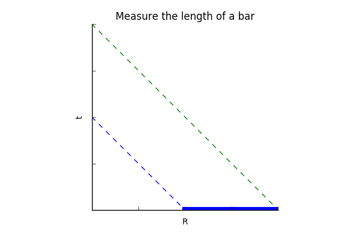
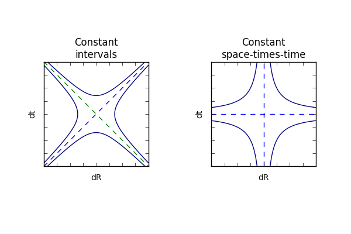
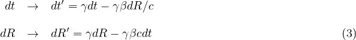
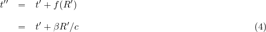
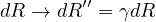
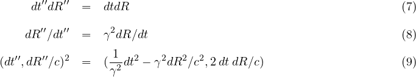
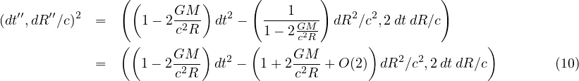
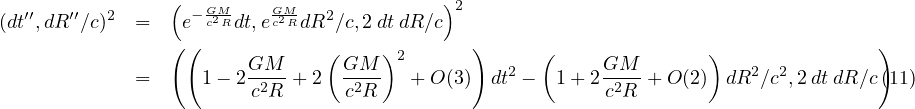
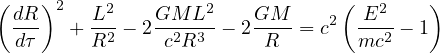
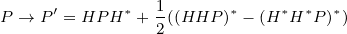

Three Roads to Quaternion Gravity
D. B. Sweetser
sweetser@alum.mit.edu
Three roads merge to create a different approach to gravity. Our deepest insights into nature use symmetries because symmetries remain unchanged. Using quaternion algebra instead of tensor calculus, the conservation of space-times-time is the symmetry underlying the quaternion gravity proposal for non-inertial observers in a gravitational field. Where there is a symmetry, there need also be a transformation law to detail how change is permitted to happen. The notion of relaxed relativity holds that in a gravitational field, one observer looking at another observer measuring the speed of light will find the product of wavelength and frequency differs from the speed of light in a precise way (c' = c \gamma^2_{esc}). (c' = c \gamma^2_{esc})Lorentz invariance remains for inertial observers, but non-inertial observers are governed by different symmetries. Gravity is different everywhere, so a field theory is also necessary using escape velocities. With some reasonable guesses constrained by observations, one can form a quaternion gravity proposal that is consistent with weak field gravity tests. No gravitons are required for this technical variant of special relativity.
Conserving Changes in Space-times-time
The views of space and time which I wish to lay before you have sprung
from the soil of experimental physics, and therein lies their strength.
They are radical. Henceforth space by itself, and time by itself, are
doomed to fade away into mere shadows, and only a kind of union of the
two will preserve an independent reality. *Herman Minkowski, 1908*
To enforce that prediction, I have made a study of writing physics equations in terms of the division algebra known as quaternions as a "kind of union of the two" (results at http://quaternions.com). Such an approach builds into all subsequent operations the unification of space and time. Using quaternions to this extent makes me an honorary member of the Quaternion Society, a long disbanded group of as many as sixty mathematicians and physicists who worked for almost twenty years promoting the utility of quaternions at the turn of the twentieth century. They considered quaternions to be a part of static geometry. The advent of special relativity opened an unseen door to the dynamic geometry of space-time.
A corollary is that we should think about all possible combinations of space and time. Velocity is a change in space over a change in time. A differential area is a change in space times a change in space. A differential angle is a change in space divided by change in space. But what is a change in space times a change in time? Under what situation would this simple yet odd product appear?
Consider two events measured that are arbitrarily close to one another. To make life simpler, use Euclidean coordinates, assuming space-time is flat. Because quaternions are numbers, the difference between the two numbers can be squared without using a metric tensor:

The scalar term (aka first term) is the Lorentz invariant interval squared of spatial relativity for two inertial observers. The 3-vector term (aka the next three terms) I call space-times-time. For inertial observers, space-times-time is Lorentz variant: how they change under a rotation or a boost is understood. Some might find this equation an abomination - a universally useful Lorentz invariant term sitting right next to these three amigos that vary. To my eye, this looks like a complete story, one that provides more useful information from the same starting information. Relativity is a game of what one observer says about another's observations. Let our primary observer be called observer A, and the one moving away is observer B. Observer A makes a measurement between two events, recording it as (dt, dx/c, dy/c, dz/c). Observer A is able to say that the measurement made by observer B looks to be (dt', dx'/c, dy'/c, dz'/c). If all one reports is the Lorentz invariant interval, then the interval squared, d \tau^2, will be the same according to special relativity. If instead one squares these two as quaternions, again the first terms are identical. The space-times-time terms are different and can be use to calculate how observer B is moving relative to observer A. From an information point of view, if one starts with four pieces of information, one should end with four pieces of information as happens with using quaternions to do the calculation.
Given the long history of doing calculations with 4-vectors and metrics, I expect no one to be persuaded. The space-times-time terms are the off-diagonal elements of a contraction with a metric tensor. I argue that a scalar times a vector element should point in the direction of the vector element since all that happens to the vector is that its scale changes. There is an opportunity to do new physics. For special relativity, the interval will be the same for two inertial observers while the space-times-time is Lorentz variant. Ask the opposite question: what sort of physics results from when observer A looks at the measurements happening for observer B and finds that the space-times-time values are identical but the intervals are not? The two observers are non-inertial based on standard special relativity.
General relativity is a relativity theory: it describes what observer A says about observer B's measurements in a gravitational field. In the simple case of an electrically neutral, uncharged, non-rotating source, the changes in measurements of time accidentally almost cancel the changes in space. The details depend on coordinate choice. For those well-schooled in general relativity, coordinate-dependent statements are of nominal interest. Quaternion gravity proposes that space-times-time is an invariant in a gravitational field.
At this point, some might ask if a flat space-time metric is being assumed due to the inflexible rules of quaternion multiplication? Recall that real numbers are rank zero tensors. As such, the rules for multiplying them are the same in all expressions, whether the topic is special relativity, general relativity, or quantum mechanics. The same is true for complex numbers as rank zero tensors. Complex numbers contain as a subgroup the real numbers and the rules for multiplying them are the same in all physics expressions. For the sake of logical consistency, quaternions in this proposal are rank zero tensors. Quaternions contain real and complex numbers as subgroups and the rules for multiplying them are the same for all physics expressions. That translates to the rules for multiplying quaternions are the same with or without gravity. A metric tensor, dynamic or not, has no place in the quaternion gravity proposal.
Quaternion expressions can always be written in a coordinate-free way by using the one-dimensional quaternion manifold . There is never an exception to this rule. To be honest, this author does always default to a Cartesian calculation-world view on the manifold . But for the sake of good practice, write space-times-time invariance in a manifestly coordinate-free form:

The quaternion gravity proposal is that the second term above will be constant in a simple gravitational field.
Relaxed Relativity Transformations
In special relativity, all observers agree on the speed of light c. I ask the reader's patience because I am going to be pedantic about how this is discussed. Observer A measures the speed of light locally as c. Observer B likewise measures the speed of light locally as c. This is not what special relativity is about. Nature is graciously consistent. Special relativity shows how observer A looking at how observer B is measuring the speed of light will say that observer B's measurements also show the speed of light to be c. Special relativity provides the relativistic Doppler shift for both the wavelength and the frequency such that the product is constant: \lambda \ne \lambda', \nu \ne \nu', and \lambda \nu = \lambda' \nu' = c. This well-establish result can serve as a test that observer B is a relatively inertial observer for observer A. "Relatively inertial"? Everywhere in the Universe is changed by the presence of gravity. What relatively inertial means is that the effect of gravity is the same for both observers. Effectively it means that two observers at sea level on the Earth experience the same pull of gravity but may be moving at a steady speed relative to each other. The sea level observer A will find that sea level observer B has measured the speed of light and the product of the wavelength and frequency remains the speed of light c in this weak gravitational field.
Relaxed relativity is defined operationally as observer A looking at
how observer B is measuring the speed of light and seeing that \lambda' \nu'
\ne c. This
covers every situation not covered by special relativity, so is huge.
This paper will only focus on transformations that conserve
space-times-time as discussed in the first section. How does that play
out for observer A? It means \frac{\lambda}{\nu} = \frac{\lambda'}{\nu'}.
Wavelength divided by frequency? It
is simple but strange. Perhaps it is not that strange. When the path of
a wave is bent going though a medium, the wave travels at a different
speed. In a vacuum with gravity, there is no medium. The path of light
is bent. The consequence of observer A seeing the product of observer
B's wavelength and frequency does not equal c is indistinguishable from
the path of light bending.
Many of the ideas carefully crafted for special relativity still apply to relaxed relativity. The time measured by observer A is what observer A sees on her wristwatch. The length of any bar is measured as a time between two events emitted simultaneously from the ends of the bar, treating the term "simultaneously" with care.
Since this study is restricted to observer A transforming measurements made by observer B such that the three space-times-time values are equal, that applies to events that are simultaneous for observer A, dt = 0. The product of anything with zero is zero, thus when dt = 0, dt dR = dt' dR'= 0. Observer A will find that simultaneous for observer A appears to be simultaneous for observer B. The same applies to changes in space at the spatial origin, where , . The non-zero constant space-times-time values will be parabolas that approach each axis:

The familiar constant intervals of the light cone are rotated 45 degrees to form the constant space-times-time graph. The mathematical perspective is that both are about the same function, a quaternion squared. The difference is that for special relativity, what is constant is a real value, dt^2 - dR^2/c^2. The focus of this paper is on three constant imaginary values, 2 dt dR.
The form of transformations in relaxed relativity must start from the same form as for special relativity.1

In relaxed relativity, one can explore other types of transformations that are not allowed under special relativity. It has been established that when events are simultaneous, dt = 0, there is a space-times-time constant independent of changes in space, dR=0. Figure out a transformation of the first expression that eliminates the spatial term. Any constant linear function can be added to the primed frame since it will be subtracted away.

See how this coordinate choice effects the transformation:

This coordinate choice eliminates the dependence on changes in space, dR. Events that are simultaneous in the unprimed frame will be simultaneous in the double primed frame.
The next task is to figure out how changes in space happen going from the unprimed to the doubly primed reference frame. Consider a bar of length L in the unprimed frame emitting two photons from the ends of that bar simultaneously in the unprimed frame.
The two events will be simultaneous in the doubly primed frame. Say gamma was 2. Then it would appear to take twice as long to appear in the double primed frame based on the time transformation described above. As such, the length would be twice as long in the double primed frame. The transformation is thus:

With these two transformations in hand, look at what happens for space-times-time, velocities, and a differential quaternion squared:

This coordinate transformation does preserve space-times-time. This is not special relativity since an observer in the double primed frame will report that the observer in the unprimed frame who is trying to measure the speed of light is not c, but changes by a factor of gamma squared, c''=c \gamma^2. The square alters the interval but leaves the space-times-time constant. To this point, this is just a math exercise.
Teaching Newtonian Gravity New Tricks
Newton's theory of gravity produces a field where every point in space-time is assigned a force. Both space and time are absolute. Special relativity demonstrates that time and space can mix via boosts, so space and time are not absolute. General relativity showed how to view gravity not as a force, but instead as the easiest path through space-time. Observer A looking at observer B making a measurement would determine that the interval was different depending on exactly where observer B was in a gravitational field.
In Principia, Newton pictured a cannon ball being fired off of a mountain top. Without being concerned with any engineering details, he calculated the escape velocity for the cannon ball, how fast it would need to go to escape the gravity field and come to rest at infinity. The escape velocity can be calculated for every point in space-time, so is an escape-velocity field. Use this escape velocity field as the velocity needed to calculate the square interval.

This is an improvement on Newton's original proposal for gravity. Notice how measurements of space change. This is enough for the three classical tests that general relativity first passed by 1919: light bending around the Sun during an eclipse, the precession of the perihelion of Mercury, and the gravitational redshift of light.
Unfortunately, this proposal is not good enough to match the today's data. There have been theoretical and experimental developments used to characterize alternative approaches to general relativity, in particular the Parameterized Post-Newtonian (PPN) formalism developed by Nordvedt and Will. Multiple experiments have confirmed that there is a second order term for time with a coefficient of +2 (the actual parameter is \beta = 1 with a multiplier of 2).
Now we get to have some real fun, to challenge ideas deeply locked into our notions of what gravity is. Newton's work got close, but not close enough. That means that a search is afoot for a new, better gravitational potential, one that can match to first order PPN accuracy...
Actually, that is not the right direction to head. What must be done is embrace the lesson of the first section: this proposal is a different class of symmetries of space-time made possible by quaternion algebra. In special relativity applied to inertial observers, one has a velocity between observers that has been created by the history of observer A compared to the history of observer B. No one asks why do they have that exact velocity relationship? In exactly that way, I argue that there are different escape velocities for observers created by the history of observer A compared to the history of observer B.
Newton's escape velocity is a truncated series of the truth. How should we go about finding the full series? Look to special relativity. Both rotations and boosts can be represented with exponential functions.2 Therefore it seams natural to propose that the geometric length of a source mass, \frac{G M}{c^2 R}, be used in an exponential function since it will generate the five terms found in the first order PPN formalism.

The first term of this expression has the form of the contraction of two rank 1 4-vectors using a flat Minkowski metric. Mathematically, it is no such animal. The input is two rank zero tensors. The output is not one value, but four in a rank 0 tensor. The rules of multiplying two quaternion do not change under any circumstance which has similarities to a fix background tensor. The off diagonal terms that can appear for a tensor contraction end up in the space-times-time terms.
The first term of the above equation will be consistent with all weak field tests of gravity to first order PPN accuracy. This covers spherically symmetric, non-rotating, uncharged sources. This "exponential metric" - in form only - is not a solution to the field equations of general relativity. In the literature, it is known as the Rosen metric. That particular proposal assumed there was a second, always constant background metric. Unfortunately the Rosen bi-metric proposal had a dipole mode for gravitational wave emission, so was not consistent with gravity wave energy loss of binary pulsar data. Notice that the quaternion gravity does not allow any off-diagonal contributions to the interval, thus eliminating effects for preferred-location, preferred-frame, or violations of total momentum conservation. The same is true of general relativity but not other proposals for gravity.
What happens when things get more complicated, like the source spins, or there are multiple sources? For every point in space-time, there will be an escape velocity such that going that precise speed means an object will stop when it reaches infinity. That is not too practical. There is an experimental approach. For observer A, set up many other observers, each measuring the speed of light. Each of these observers measures the speed of light locally is c. Have observer A determine for each of these many other observers what the wavelength and frequency look like to observer A. The result of the product will be c \gamma^2_{esc}. The escape velocity field will always exist and can be measured.
At second order PPN accuracy, the interval using Newton's escape velocity will not agree with the Schwarzschild solution of general relativity. The difference for light bending around the Sun is about 6% and under a micro-arcsecond. Our current accuracy for measuring light deflection is on the order of 100 micro-arcseconds. Even if the state of the art were improved, effects like the rotation of mass in the Sun and the Sun's quadrapole moment would be on the same order. Getting a direct experimental conformation of the difference between this proposal and general relativity will depend on future developments.
Using the same approach that appears in the analysis of the Schwarzschild solution of general relativity, one could rewrite the first term of the square in spherical coordinates and see no dependence on either time or angles. As such, the expression will conserve both energy and angular momentum. If one only keeps the lowest order terms of the exponential equation, the equations of motion are:

These are exactly the same equations of motion as the Schwarzschild solution of general relativity since the first order expressions have an identical form. This form of the proposal may be more convenient for some calculations.
Extreme Gravity
Black holes, quantum gravity, and gravitational waves are three topics of current research. How does quaternion gravity deal with these topics?
It used to be that when a physics theory had a mathematical singularity, that was considered a sign that the theory had to be replaced in the domain of the singularity. Einstein considered the "frozen stars" solution of general relativity to be serious given the historical pattern of progress in physics. It was part of his motivation in his unsuccessful quest for a unified field theory. While the event horizon of a black hole can be eliminated by a different choice in coordinates, work by Penrose and Hawking showed the mathematical singularity could not be transformed away so the singularity was essential. It is common opinion that a quantum theory for gravity will eliminate this issue. In this way, black hole physics and quantum gravity are linked.
There are few exact solutions to general relativity. Numerical solutions are also hard to craft. Because general relativity has ten non-linear second-order differential equations, one expects an enormous challenge. In contrast, any function that can be inverted could be used to preserve space-times-time while changing how observer A sees an interval measured by observer B. This may sound too easy, but is consistent with the logic of general relativity. What contributes to bending of space-time in general relativity? Absolutely everything, no exceptions. In quaternion gravity, the only question is what does it take to escape your shared history with the particles around you, no matter what every particles are doing? Everything can and does contribute to inching the escape velocity up.
The exponential factor in this proposal does have a singularity at R=0. Since the distance is positive definite, the singularity will only be approached for R positive. The real part will approach zero. The imaginary part is a pole that goes to positive infinity. It should be possible to remove the singularity, so the expression for the exponential quaternion gravity is well-behaved.
What happens when more matter than can be supported by the nuclear forces falls into a neutron star? I don't know.
General relativity has resisted all efforts at renormalizable quantization. It is a reasonable hypothesis that a spin 2 graviton would be the particle to mediate the force. There is some internal tension in the phrase "particle to mediate the force" since the strong equivalence principle asserts that geodesics are the easiest of all possible paths through space-time, requiring no force what-so-ever. There is no particle for special relativity. Instead, observations of all particles by relatively inertial observers must obey the rules set by special relativity. There is no particle for quaternion gravity. All particles must obey the rules of quaternion gravity. In some ways, this is a minor loss: there are no efforts now or in the near future to detect gravitons since they beyond our ability to generate. Quaternion gravity proposed there is no graviton. In other ways, this is huge given the ongoing efforts to find quantum gravity. All relativity theories are about exactly what one observer says about another observers measurements. Stated that way, there should be no particles doing this work.
The physics community is excited by the observations of gravitational waves. The waves matched models of a ring down event for a binary system to a black hole. The space-times-time symmetry requirement for the quaternion gravity proposal is dynamic in the sense that the distance used in the exponential can be a function of time. Yet it is far to early to claim the proposal can be consistent with the gravity wave data collected to date.
Quaternion Gravity as a Simpler Competitor to General Relativity
Some have argued that there is no simpler metric theory possible than general relativity. In a vacuum, the Lagrangian is only composed of the Ricci scalar . The radical simplicity of general relativity has two different implications for tests of gravity. First is that the path of light is changed. Since light has no rest mass but does have equal parts energy and momentum, a proposal that centers on rest mass will fail. A second consequence has to do with gravity wave emissions. Observations of pulsar data support the conclusion that the lowest mode of gravity wave emission is a quadrapole (think wobbling water balloon). Add any new field and the new proposal will likely have a dipole mode of emission and thus be in conflict with experimental data.
The only possible way to have a simpler Lagrangian in a vacuum than general relativity is one with no letters at all. At first and second glance, that does not sound like a theory. Careful reflection is needed on what special relativity is as a physics theory. Special relativity is a set of algebraic constraints on all physics theories. There is no "particle" for special relativity. Rather all particles must obey its rules. Those rules are not about how things move. The rules are about observers observing other observers. The rules only cover inertial observers.
Quaternion gravity is profoundly similar to special relativity given it is merely a rotation of the light-cone by 45 degrees. There is no particle needed for differences in observers observing other observers. Both special relativity and quaternion gravity will necessarily apply to all particles whether they have a rest mass or not.
There is no extra field where energy could be stored. For an isolated mass to conserve both energy and momentum, a system would have to wobble like a water balloon. Could a system lose energy? It is vital to recall that a gravity wave is not something done via particles like electromagnetic waves and the photon. Masses in cyclic motion will create cyclic variations in the escape velocity field because an observer will be different distances away from the source at different times. Anything varying cyclically can be characterized by a wave. Waves have both energy and momentum.
Why then does gravity work? Actually, gravity does no work, just like special relativity. Both quaternion gravity and special relativity are about the consequences of differences in space-time history of two observers. If observer A is moving at a steady velocity relative to observer B who is measuring the speed of light, observer A will say both the frequency and the wavelength measured at B are different, but the product, the speed of light, is c. If observer A is not moving relative to observer B, but is closer to a gravitational source, a different situation arises. Since observer B is farther away from the gravitational source than observer A, observer A will see the measurement made by B as easier - there is less stuff - meaning observer A measures observer B's clock as ticking freer and faster, and observer B's ruler looks bigger. This means observer A will say the speed of light looks greater than c at B. One could argue that such an effect should be crazy small, yet that is what gravity is, a crazy small effect. If gravity is treated as a force, then it is more than forty orders of magnitude smaller than electromagnetism. The disparity between gravity and the three other fundamental forces is an open mystery.
What about Newton's apple falling from a tree? The apple is trying to oscillate around the center of the Earth, reach its antipode in 45 minutes, and return in 90 minutes (approximately). The rest of the mass of the Earth is in its way in a traffic jam so that does not happen. If the tree were uprooted and put into deep space with no gravitational mass of any consequence near by, the apple would not fall anywhere. Herein lies the appeal of the exponential solution. In deep space, the exponent is zero. On the surface of the Earth, the exponent is so tiny, only the first term of the Taylor series comes into play. That first term is Newton's proposal for gravity cast in a different format. Quaternion gravity may be the only comprise between Newtonian gravity, the space-time curvature of general relativity, and an alternative view on the math of special relativity.
-
The idea for this transformation was written in a YouTube comment by PurplePenguin, a physics professional whose name is not known to me. ↩
-
It is an unpublished result of mine that a real-valued hyperbolic function can do the trick. It has been known since 1910 that complex-valued quaternions can do Lorentz boosts. For a boost along the axis, a space-time event and a function can do the standard boost with this function:

It may be the case that people searched for a function that was only one triple product as happens for rotations, and not this sum of three triple products. ↩